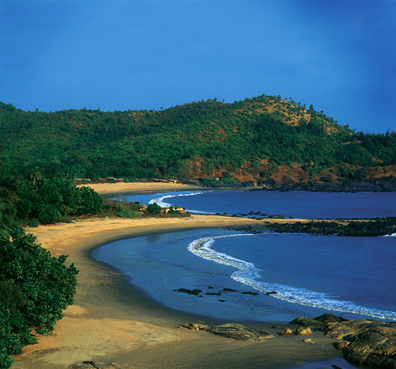
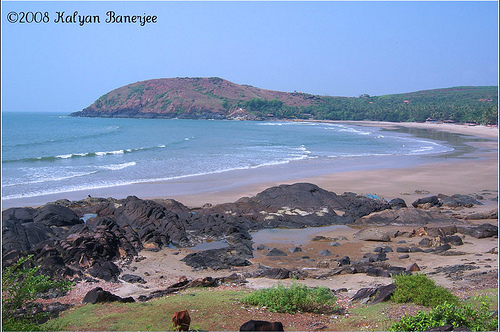
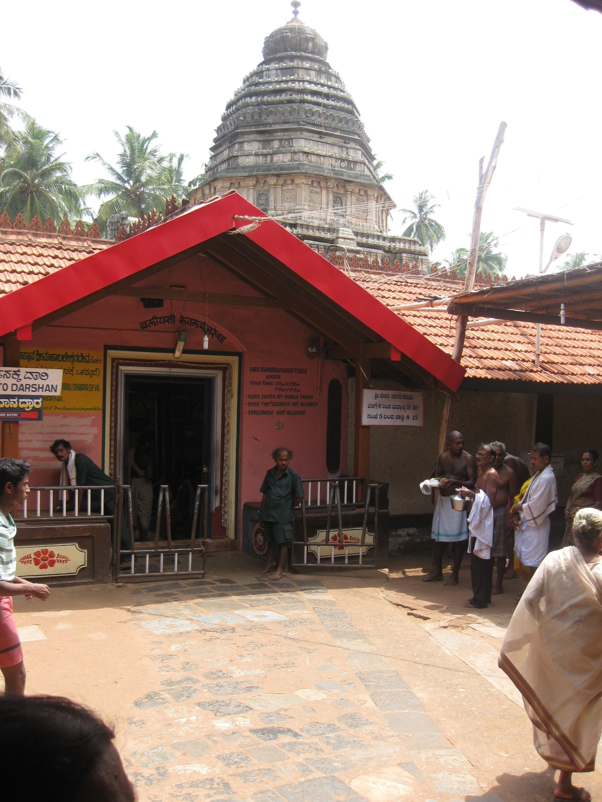
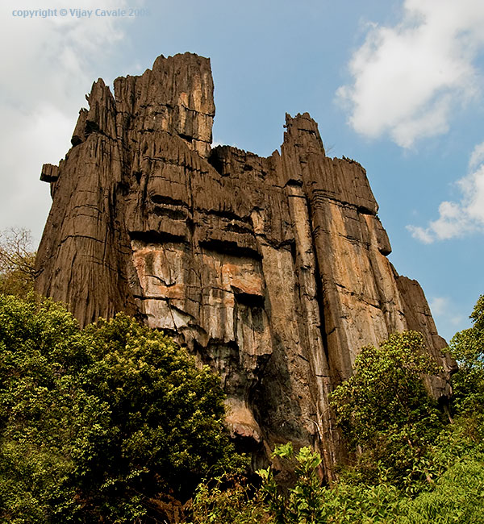
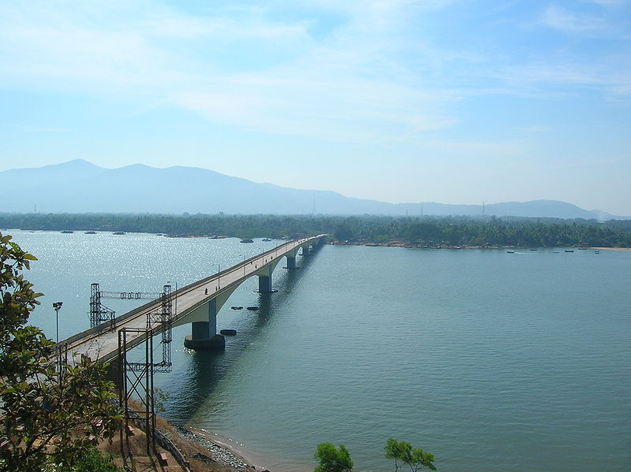
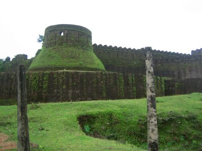
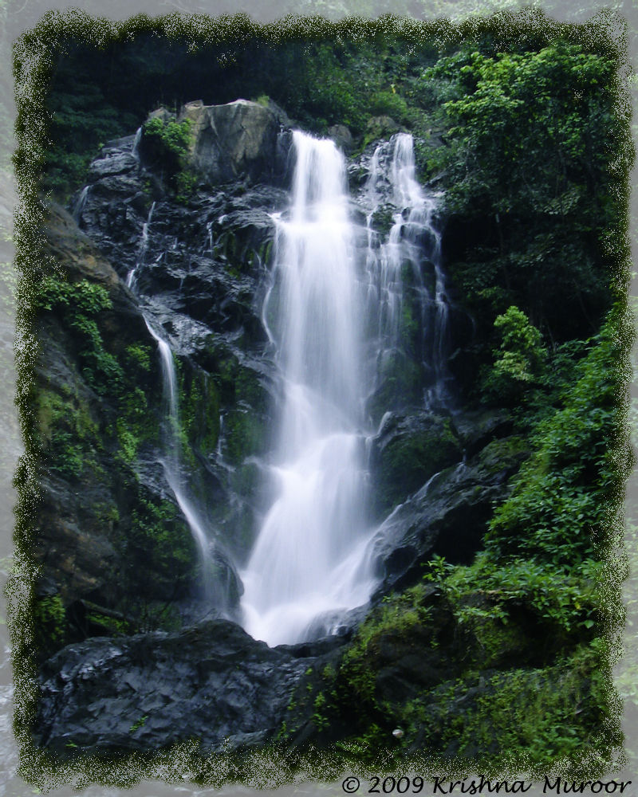

Om Beach
It is marvelous beach to pay a visit. The beach got its name because it is shaped like the auspicious Om sign, a spiritual Hindu symbol. Om beach is the only naturally Om shaped beach. It is considered one of the most important places for fulfillment spiritually, physically and emotionally.
There are some really basic huts and some chai shops to eat at. Many Indian pilgrims visit Om beach on holidays to see the sites. Water sports activities on the beach provide wonderful experience to the visitors, the activities including surfing, skiing and banana boat cruises are available and can be arranged under the supervision of qualified and experienced instructors.
Kudle Beach
Kudle Beach is about a twenty-minute walk from Gokarna. To get to Kudle, take the conduit that starts on the south side of the Ganapati Temple. The path goes uphill and then drops down to Kudle Beach, a gorgeous, kilometers-long white sandy beach bordered by palm trees.
At this beach there are simple huts and beach-side eating places. You need to bring your own bedding. There are huts which are offered very cheap, just big enough to sleep in and to store a backpack. At full moon, one can walk from Kudle to Paradise beach without a torch!
Only expert swimmers can swim here.
Gokarna Mahabaleshwara Temple
The revered Atmalinga in the Mahabaleshwara temple is said to have been brought here by Ravana. It is said that Ravana did penance to obtain the Atmalinga, the possession of which would have made him invincible. Lord Shiva gave him the Atmalinga but told him that if he ever placed it on the ground before he got to Lanka; he would not be able to lift it again.
As the Devas did not want Ravana become even more powerful and extend his tyranny across more worlds, they prayed to Lord Ganesha who tricked Ravana into placing the Atmalinga down on the ground at Gokarna. As he was not able to lift it up again, Ravana had to leave without it. A temple was built to house this powerful Atmalinga - the Mahabaleshwara Temple. There are many other temples in Gokarna and surrounding areas like the Maha Ganapathy Temple, the Uma Maheshwari Temple, and the Bhadrakali Temple, Varadaraja Temple, Tamragauri Temple and the Venkataramana Temple.
Yana
The village of Yana is located in the Uttara Kannada district in Karnataka. It is famous for its unusual rock formations. The village of Yana is famous for its two main rocky formations; they are the Mohini Shikara and Bhairaveshwara Shikara. The black limestone is seen in a crystalline form and the Shikara’s are around 300 feet in height.
The Village is also a place of pilgrimage and is considered scared by many due to the cave temple where a natural or self manifested lingam has formed. Yana is also a hill station and is popular due to its lush green forest. A waterfall called Vibuthi falls is one of the important tourist attraction.
During the festival season many devotees flock to the hill station and the village is transformed into a hub of activity. Many devotees who visit take a dip at the spring in the cave in order to cleanse themselves. Yana is also considered as an important bio diversity hot spot and is being considered for protection under the Biodiversity welfare Act.
Yana is situated approximately 400 kms from the city of Bangalore. Kumta is the nearest railway station and the nearest airport is at Hubli which is 102 Kms from Yana.,
Murdeshwara

Murudeshwar, the pilgrimage paradise and a scenic holy place, has recently shot into prominence as one of the loveliest spots in Karnataka. The tiny town of Murudeshwar, home to a huge Shiva temple, is also home to a sizable Muslim and Christian population. This is really a secular village and people of this small town live in harmony. The place is sanctified by a piece of the Pranalinga of Mahabaleshwara and has some beautiful carvings and statues. Bounded by the shimmering sea and rolling hills, the place is a favorite picnic spot.
One can enter Murudeshwar from the Bhatkal-Honnavar National Highway through a specially erected big entrance decorated with intricate carvings. Murudeshwar symbolises the past glory of Hinduism. It is centered on the splendid Murudeshwar temple atop a hillock overlooking the Arabian Sea.
Bounded by the shimmering sea and rolling hills, Murudeshwar is the sort of place which makes you contemplate about life and what it means to you.
The sea is an intrinsic part of the temple scape at Murudeshwar. The sea surrounds the temple towering on the small hill called Kanduka Giri on three sides. A huge 15 m statue of Shiva towers over the town and has an overwhelming presence. The statue, which is only a couple of years old, is in a complex, which encompasses the 500-year-old Shiva temple.
One is greeted with the bewitching beauty of the surroundings as one reaches the top of the hillock. The vast stretches of silvery sands with the Sahyadri mountains framed into the background, the coconut trees dancing to the tunes of the billows, rose of boats dancing and drifting towards the shore, the sun looking like a ball of fire just before the sunset and then sinking into the sea - all weave a magic spell and make the viewers forget themselves.
There is also a huge fort behind the temple believed to be renovated by Tipu Sultan, the ruler of Mysore.
Karwar
The town of Karwar is located in the Indian state of Karnataka. This town is located in the Uttara Kannada district of Karnataka and is a very important tourist destination in the region. The region of Uttara Kannada is known for its serene natural beauty, as the region has some gorgeous scenery, lush green hills, imposing mountains that are part of the Western Ghats and pristine beaches will illuminate the Arabian Sea in all its glory.
While visiting the town of Karwar, you will witness a clash of cultures, and this is what the town is mainly famous for. The town of Karwar is located in the border of the state of Karnataka, and the culture in this town is a heady mix of both Kannada and Marathi cultures.
There are a lot of must see destinations in the region of Karwar, and some of these are the Oyster Rock Lighthouse, Kurumgad Island, Devbagh Beach, Hyder Ghat Pass, Durga Devi temple, Naganath Temple, Guddahalli Peak, Tilmatti Beach, Anshi National Park, Majali Beach, Chendia Falls, Kali Bridge, Shirve Ghat, Habbu Mountain and the Jai Santoshi Maata Temple. There are countless temples in this region, and pilgrims flock to this town during the season of festivals.
Mirjan Fort
The Mirjan Fort is located on the west coast of the Uttara Kannada district in the southern Indian state ofKarnataka. The fort known for its architectural elegance was the location of several battles in the past. It is about 0.5 kilometres (0.31 mi) from the National Highway 17 and 11 kilometres (6.8 mi) from Gokarna, the famous Hindu pilgrimage centre on the west coast of India.[1][2]
According to the first historical version, Queen Chennabhairadevi of Gersoppa (under the Vijayanagara Empire) was initially credited with building the Mirjan Fort in the 16th century. She ruled for 54 years and also lived in the fort.[3][4][5] During her reign, the port at Mirjan, which is 32 kilometres (20 mi) to the south east of Karwar, was used for shipping pepper, saltpetre and betel nut to Surat. Gersoppa, a district annexed to Bednur, was famous for the pepper exported from this region. Consequently, thePortuguese gave the epithet "Rani, the Pepper queen" to the Queen of Gersoppa.
Vibothi falls
One of the numerous waterfalls of the Western Ghats. This beautiful waterfall is at few kilometers distance from the place Yana.
Along with the two huge rocks there is one more limestone rock structure (which is quite small in size compared to the giants) in the vicinity. When asked a localite said the waterfall got the name as Vibhooti falls because of this Lime Stone rock nearby.
Once the Vaddi ghats are over you can feel the humidity of the coastal Karnataka (Coast is few hours journey from here). One will have to take a deviation at a place called Mabagi. From here the water fall is around 3kms distance. Though one finds few houses nearby the tentage and food are the items one should pack.